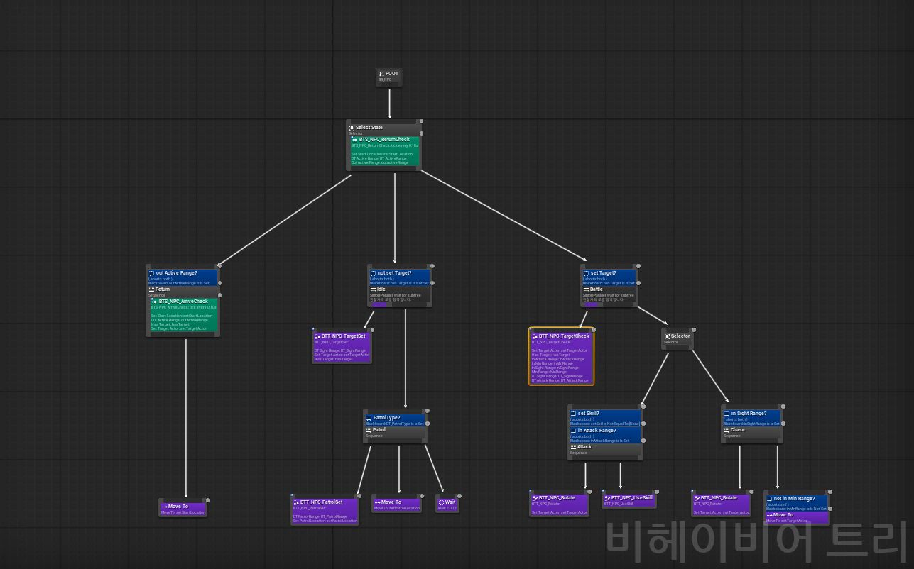
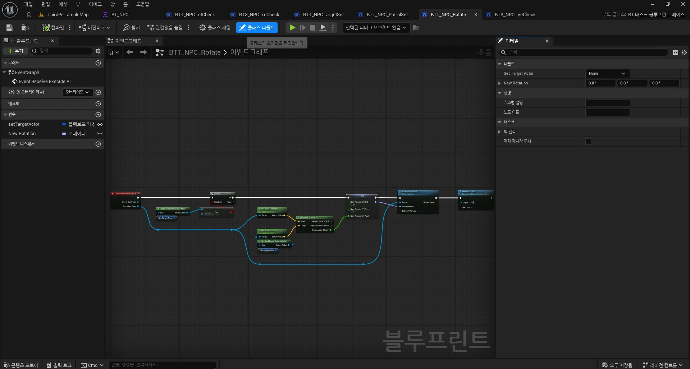
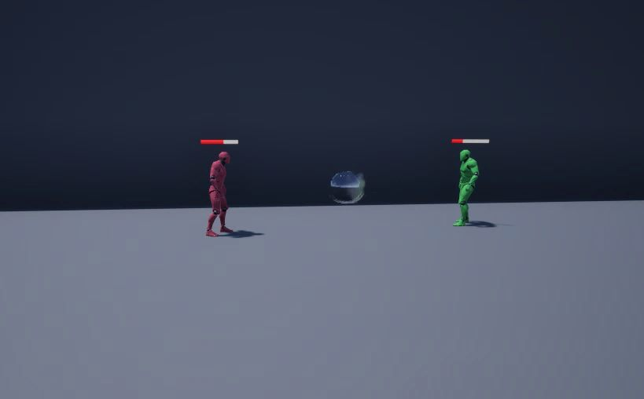
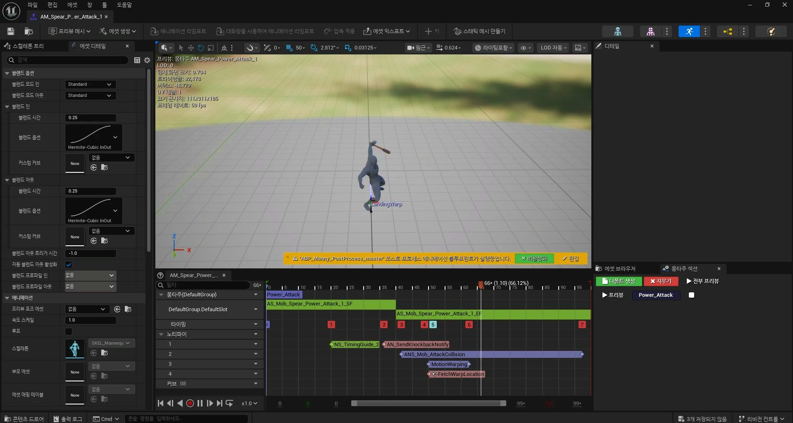
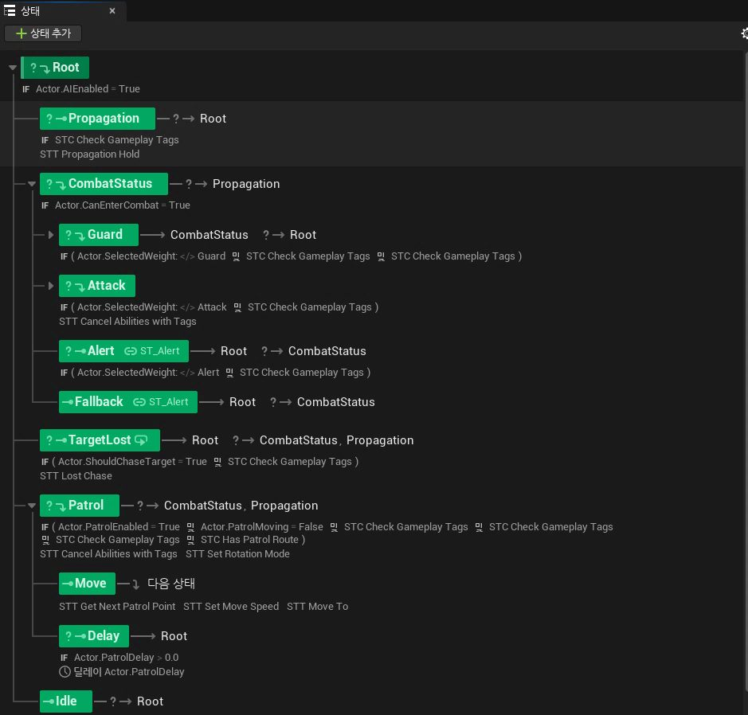
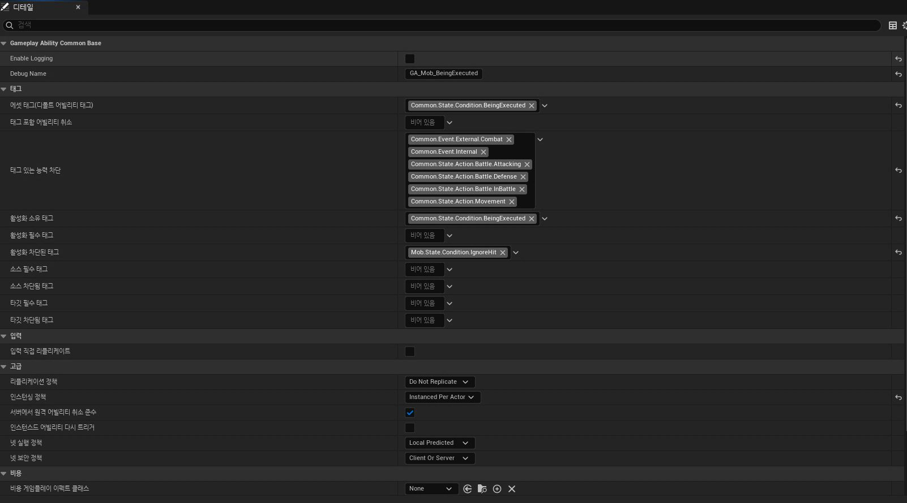

Practice / Behavior Tree
BT, State Tree, 애니메이션 블루프린트를 활용해 공격, 경계, 방어 등의 행동을 수행하는 AI를 구현했습니다.
태스크, 서비스, 데코레이터를 블루프린트로 구현하며 기본 숙련도와 이해도를 높였습니다.
AI 값을 데이터 테이블에서 수정하도록 구축하며 데이터 테이블 구조를 구상하는 숙련도를 높였습니다.




Project / 월하일검


What I Can Do
언리얼에서 직접 구현해 본 범위입니다.
Behavior Tree · 블루프린트
월하일검 공용 AI
AI 값 · 전투 · 연출 데이터